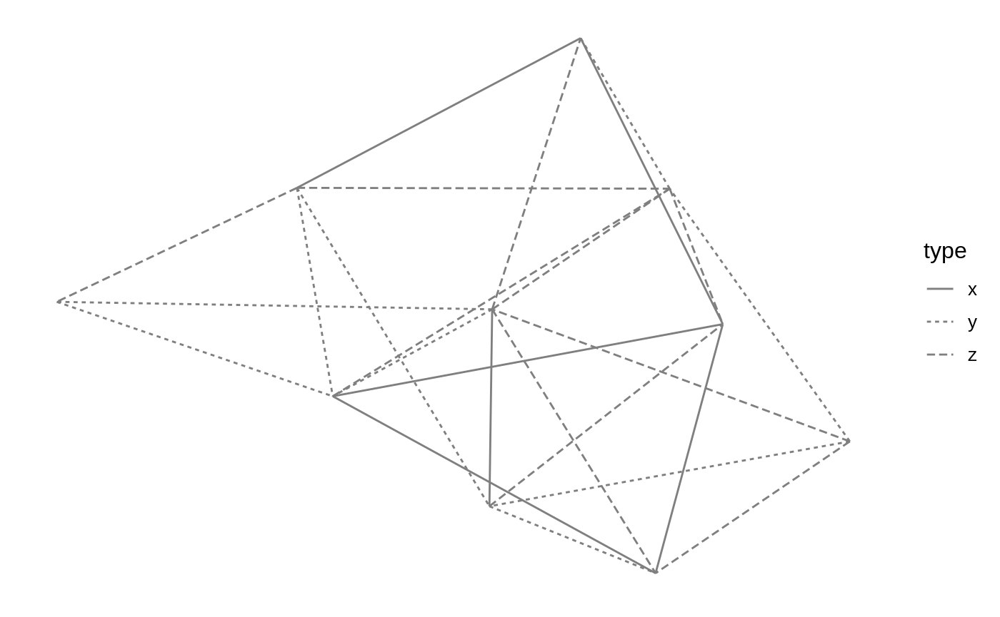
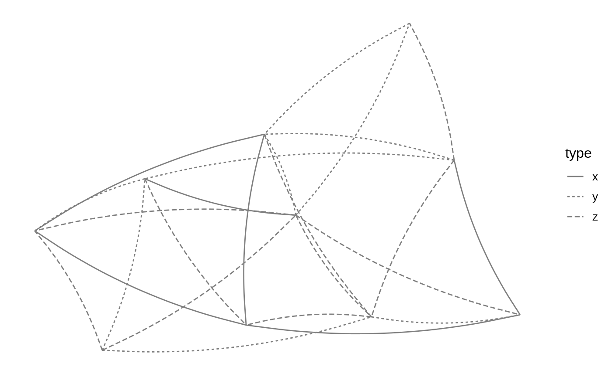
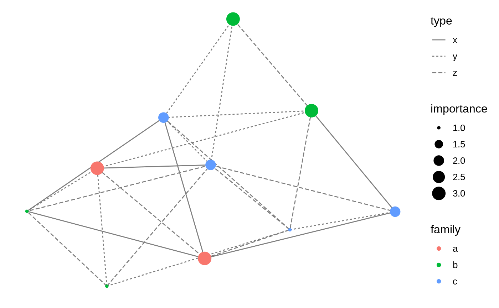

Main building blocks
ggnetwork
The ggnetwork package is organised around a ‘workhorse’ function of the same name, which will ‘flatten’ the network object to a data frame that contains the edge list of the network, along with the edge attributes and the vertex attributes of the sender nodes.
The network object referred to above might be an object of class network, or any data structure that can be coerced to it, such as an edge list, an adjacency matrix or an incidence matrix. If the intergraph package is installed, then objects of class igraph can also be used with the ggnetwork package.
The data frame returned by ggnetwork also contains the coordinates needed for node placement as columns "x", "y", "xend" and "yend", which as a consequence are “reserved” names in the context of ggnetwork. If these names show up in the edge or the vertex attributes, the function will simply fail to work.
The default node placement algorithm used by ggnetwork to produce these coordinates is the Fruchterman-Reingold force-directed layout algorithm. All of the placement algorithms implemented in the sna package are available through ggnetwork, which also accepts additional layout parameters:
ggnetwork(n, layout = "fruchtermanreingold", cell.jitter = 0.75)
ggnetwork(n, layout = "target", niter = 100)The layout argument will also accept user-submitted coordinates as a two-column matrix with as many rows as the number of nodes in the network.
The top of the data frame produced by ggnetwork contains self-loops to force every node to be included in the plot. This explains why the rows shown below have the same values in "x" and "xend" (and in "y" and "yend"), and only missing values in the columns corresponding to the edge attributes:
## x y family importance na.x vertex.names xend
## 1 0.3266122 0.2393312 c 3 FALSE 1 0.3266122
## 2 0.8577594 0.5979865 b 1 FALSE 2 0.8577594
## 3 0.0000000 0.6572437 c 2 FALSE 3 0.0000000
## 4 0.2765815 0.0000000 b 3 FALSE 4 0.2765815
## 5 0.2374489 0.4490437 c 3 FALSE 5 0.2374489
## 6 0.4819983 1.0000000 b 3 FALSE 6 0.4819983
## yend day na.y type
## 1 0.2393312 NA NA <NA>
## 2 0.5979865 NA NA <NA>
## 3 0.6572437 NA NA <NA>
## 4 0.0000000 NA NA <NA>
## 5 0.4490437 NA NA <NA>
## 6 1.0000000 NA NA <NA>The next rows of the data frame contain the actual edges:
## x y family importance na.x vertex.names xend
## 101 0.6481961 1.0000000 c 3 FALSE 10 0.3036064
## 11 0.6481961 1.0000000 c 3 FALSE 10 0.6841529
## 12 0.6841529 0.6707154 a 1 FALSE 8 0.3450351
## 13 0.6841529 0.6707154 a 1 FALSE 8 0.9184340
## 14 0.6841529 0.6707154 a 1 FALSE 8 1.0000000
## 15 0.6841529 0.6707154 a 1 FALSE 8 0.2643885
## yend day na.y type
## 101 0.8973505 2 FALSE y
## 11 0.6707154 1 FALSE z
## 12 0.5691821 3 FALSE x
## 13 0.4535031 1 FALSE x
## 14 0.7262208 1 FALSE y
## 15 0.7391170 2 FALSE zThe data frame returned by ggnetwork has (N + E) rows, where N is the number of nodes of the network, and E its number of edges. This data format is very likely to include duplicate information about the nodes, which is unavoidable.
Note that ggnetwork does not include any safety mechanism against duplicate column names. As a consequence, if there is both a vertex attribute called "na" and an edge attribute called "na", as in the example above, then the vertex attribute will be renamed "na.x" and the edge attribute will be renamed "na.y".
fortify.network and fortify.igraph
The ‘flattening’ process described above is implemented by ggnetwork as fortify methods that are recognised by ggplot2. As a result, ggplot2 will understand the following syntax as long as n is an object of class network or of class igraph:
However, if the object n is a matrix or an edge list to be coerced to a network object, you are required to use the ggnetwork function to pass the object to ggplot2:
geom_edges
Let’s now draw the network edges using geom_edges, which is just a lightly hacked version of geom_segment. In the example below, we map the type edge attribute to the linetype of the network edges:
ggplot(n, aes(x = x, y = y, xend = xend, yend = yend)) +
geom_edges(aes(linetype = type), color = "grey50") +
theme_blank()
The other aesthetics that we mapped are the basic coordinates of the network plot. These might also be set as part of the call to geom_segment, but setting them at the root of the plot avoids having to repeat them in additional geoms.
Note that geom_edges can also produce curved edges by setting its curvature argument to any value above 0 (the default):
ggplot(n, aes(x = x, y = y, xend = xend, yend = yend)) +
geom_edges(aes(linetype = type), color = "grey50", curvature = 0.1) +
theme_blank()
geom_nodes
Let’s now draw the nodes using geom_nodes, which is just a lightly hacked version of geom_point. In the example below, we map the family vertex attribute to the color of the nodes, and make the size of these nodes proportional to the importance vertx attribute:
ggplot(n, aes(x = x, y = y, xend = xend, yend = yend)) +
geom_edges(aes(linetype = type), color = "grey50") +
geom_nodes(aes(color = family, size = importance)) +
theme_blank()
Because ggplot2 follows Wilkinson’s grammar of graphics, it accepts only one color scale. In the example above, that scale is mapped to a vertex attribute, but it could have also been mapped to an edge attribute. Mapping a color to both a vertex attribute and an edge attribute will create a single color scale that incorrectly merges both attributes into one:
ggplot(n, aes(x = x, y = y, xend = xend, yend = yend)) +
geom_edges(aes(color = type)) +
geom_nodes(aes(color = family)) +
theme_blank()This is a limitation of ggnetwork that would require violating some fundamental aspects of the grammar of graphics to be circumvented.